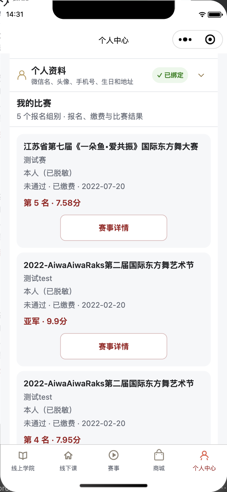

“我的比赛”集中展示本人报名与结果
点击个人中心的“我的比赛”后，原地展开个人比赛记录。无论零条、一条或多条，都不再自动跳转到赛事首页或赛事详情。再次点击可收起。
- 下方重复的“比赛报名”区域已合并到“我的比赛”。
- 展示赛事、组别、选手号、参赛人、节目名称、审核与缴费状态，以及服务端已公示的名次、奖项和分数。
- 未公示成绩统一显示“成绩待公示”；零分保留为零，不误判成无成绩。
- 仅点击“赛事详情”才进入该赛事；服务端允许缴费时保留“继续缴费”，使用准确的报名记录 ID。
- 保留加载、空记录、失败重试、刷新，以及切换账号时丢弃过期响应的处理。
沿用现有受保护的 member/events 接口。服务端从 Bearer Token 识别用户，沿用既有本人、本人提交以及关联手机号的历史记录范围；本轮没有修改后台权限或比赛结果数据。
103 项回归测试与小程序一致性检查通过。微信开发者工具真实点击记录见 运行验证。下图为当前账号只读记录的真实渲染，姓名、头像、手机号及节目名称已做页面内脱敏，不修改账号资料。

本轮源码差异 · 测试日志
状态：本地源码与开发者工具验证，未上传、未提审、未正式发布。未提交报名、缴费或修改比赛记录。